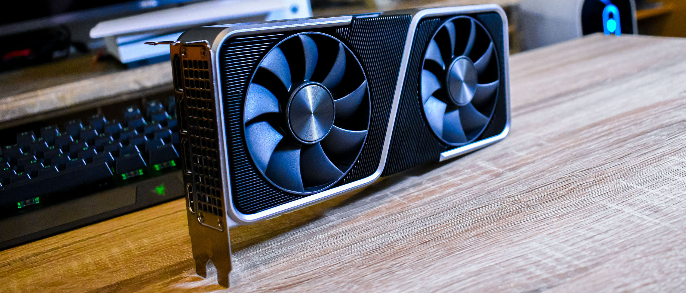
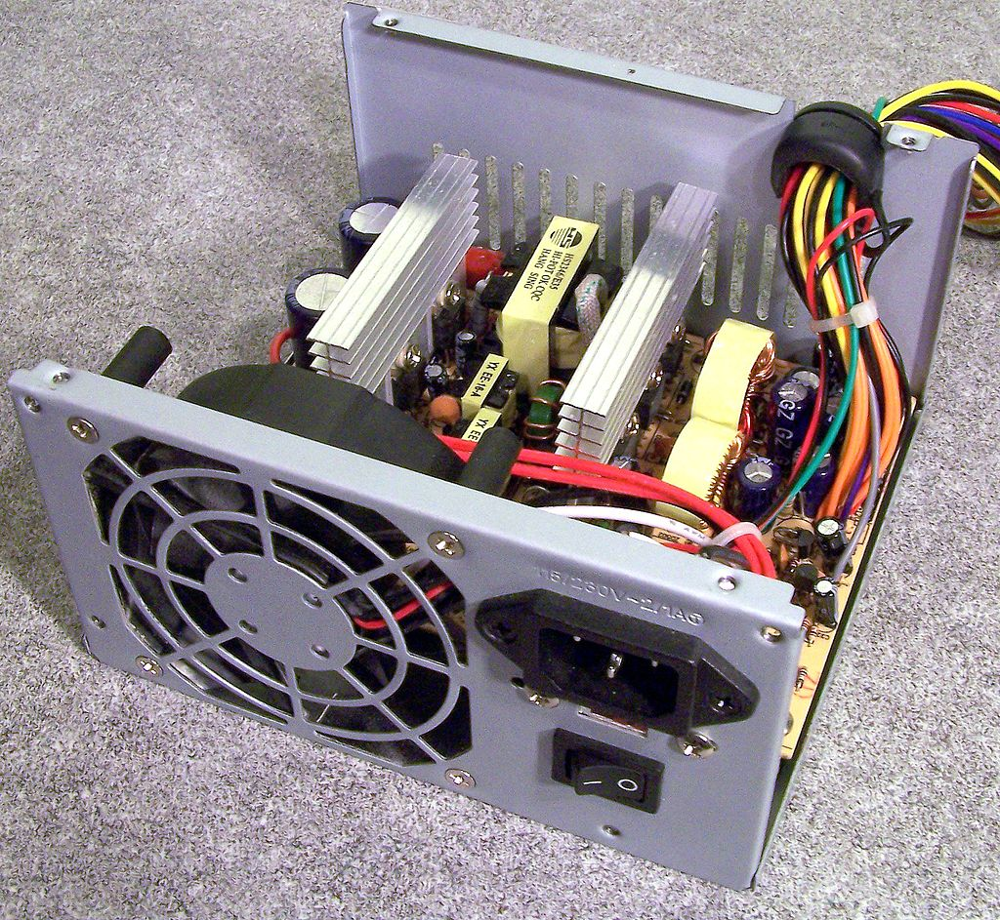
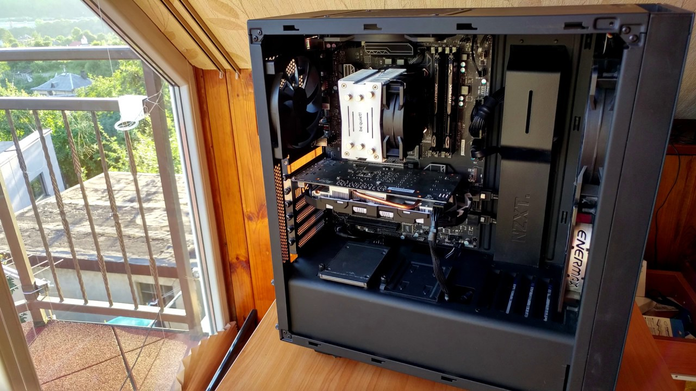

Glossary: Learn about PC Building's most important terms. Click the titles to see the current prices and selection of each part from pcpartpicker.com!
CPU
Also known as the processor, the CPU (or Computer Processing Unit) is the heart or brain of the machine. The part perhaps most responsible for a computer's speed and responsiveness, it goes directly into the motherboard in a specially marked socket. The top manufacturers of CPUs are Intel and AMD. Your motherboard's socket must match the processor's socket type! As of right now, I'd recommend an AMD processor, specifically their Ryzen 5 5000-series CPUs (which are actually in stock!).

Motherboard
If the CPU is the brain, the motherboard is the nervous system of your machine. This is where pretty much everything plugs into! Different motherboards have different features and ports, but the design is fundamentally the same no matter what brand you get. Motherboards feature different "chipsets," which are basically versions of a motherboard that have different features. New chipsets come out every year or two. If you get a Ryzen 5 5000-series CPU, I'd recommend a B550 or X570 chipset board from a manufacturer like Asus, MSI, ASRock or Gigabyte.

RAM
RAM, or Random Access Memory, is your computer's sort term memory, and it's extremely important for journalistic tasks like editing on Photoshop or Premier. I'd recommend 16GB of DDR4-3200. That statement is less confusing than it looks! DDR4 is the current "generation" for RAM, with DDR5 expected to become the standard in 2022. The "3200" is just the RAM's speed, in this case, 3200 MHz. The faster the RAM (the bigger the number!) the faster your computer will be able to manage and sort through RAM intensive tasks like Adobe programs. It plugs directly into the motherboard, very close to your CPU.

GPU
The GPU (also known as the graphics card, video card or graphics processing unit) is an expansion card for your PC. It is unnecessary for your PC to work, but serves an extremely important purpose by taking away graphics rendering tasks from your CPU. In other words, it's like another CPU whose only job is to render graphics. GPUs are essential for those who may want to play video games on their PC, or for journalists who work with video editing software. Even though the descrete GPU isn't essential for your PC to work, many users will find the tasks they want to do will practically require a graphics card.
PSU
The Power Supply Unit, or PSU, does exactly what it sounds like: it provides your PC with power from the wall. Cords from the PSU plug directly in to sockets on the motherboard, providing each of your components with power. PSUs are rated by effciency on a scale from Bronze to Titanium. A high effciency rating means the PSU will cost more, but will save you money in the long run due to lower energy bills. I'd aim for the sweet spot of Gold rated power supplies.
Cases
The case performs the simple function of housing your PC's parts. Cases can provide your PC's components with better cooling based on how they are designed and how many fans they feature. Cases also serve a major purpose in that they are the major front-facing design feature of your computer. Do you want your case to be white? Red? Black? Do you want it to have a window on the side so you can look inside? Do you want it to be small or big? These are all things your case can control!
Storage
Your PC's storage is where all of your projects will be saved. In addition, the operating system itself will be installed on a drive, so its important to get a drive with good read and write speeds. The faster the storage, the more responsive your PC will be. There are three main types of consumer storage solutions right now: the classic hard drive, the newer 2.5 inch solid state drive and the even newer NVMe solid state drive. The classic hard drive (known as the HDD or hard disk drive) is the slowest of the three, and therefore the cheapest. A terabyte of hard drive storage is about $50: super inexpensive. It's a great idea to make a HDD your main storage solution for your exported videos and content and put your OS and applications on a solid state drive. Why? Because solid state drives are faster! A 2.5 inch SSD is a good inbetween for speed and cost. An NVMe SSD plugs directly into the motherboard and is about the size of a stick of gum! It's usually the fastest of the three types.